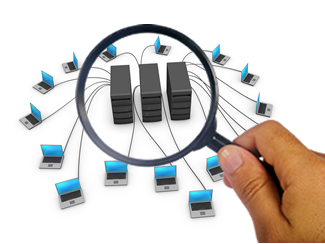

ADMINISTRACION DE REDES

Contempla todas las tareas realizadas por profesionales de TI con el fin de garantizar la disponibilidad y calidad de la infraestructura tecnologica de una organizacion.
Sus objetivos son:
- Mejorar la continuidad en la operación de la red con mecanismos adecuados de control y monitoreo, de resolución de problemas y de suministro de recursos.
- Hacer uso eficiente de la red y utilizar mejor los recursos, como por ejemplo, el ancho de banda.
- Hacer la red mas segura, protegiéndola contra el acceso no autorizado, haciendo imposible que personas ajenas puedan entender la información que circula en ella.
- Controlar cambios y actualizaciones en la red de modo que ocasionen las menos interrupciones posibles, en el servicio a los usuarios.
La administración de la red se vuelve más importante y difícil si se considera que las redes actuales comprendan lo siguiente:
- Mezclas de diversas señales, como voz, datos, imagen y gráficas.
- Interconexiónde varios tipos de redes, como WAN, LAN y MAN.
- El uso de múltiples medios de comunicación, como par trenzado, cable coaxial, fibra óptica, satélite, láser, infrarrojo y microondas.
- Diversos protocolos de comunicación, incluyendo TCP/IP, SPX/IPX, SNA, OSI.
- El empleo de muchos sistemas operativos, como DOS, Netware, Windows NT, UNÍS, OS/2.
- Diversas arquitecturas de red, incluyendo Ethernet 10 base T, Fast Ethernet, Token Ring, FDDI, 100vg-Any Lan y Fiber channel.
Responsabilidades de un administrador de red
- Mantener al sistema de red seguro.
- Realizar una copia de seguridad diaria de los datos más importantes y realizar una más prolongada de los datos menos relevantes.
- Estar en constante comunicación con el personal dentro de la empresa y más si este personal es de su misma área como los técnicos que brindan soporte en computación a nivel de hardware o software.
- Brindar el correcto mantenimiento a la parte física de la red y en caso de reparación informar del problema inmediatamente.
- Estar pendiente de los posibles fallos dentro de la red y si se presenta alguna solucionarlo de manera eficaz y rápida.
- Jamás revelar información de los usuarios dentro o fuera de la empresa.
- Establecer que usuarios o departamentos tienen acceso a información confidencial que almacena el administrador de red dentro de los servidores de la empresa.
- Establecer las mayores medidas de seguridad para así mantener la información contenida en los servidores la más protegida posible utilizada los métodos más avanzados para el propósito (detección de huellas dactilares, codificación de retina única, tarjeta perforada con pulsaciones electromagnéticas que detecta el sistema lector de tarjetas…)
- Deberá establecer cuales ordenadores hacen la función de servidores y cuales hacen función de estaciones clientes.
- Deberá tomar las precauciones necesarias para evitar el intrusismo o hacking.
Tomado de: Monografias.com